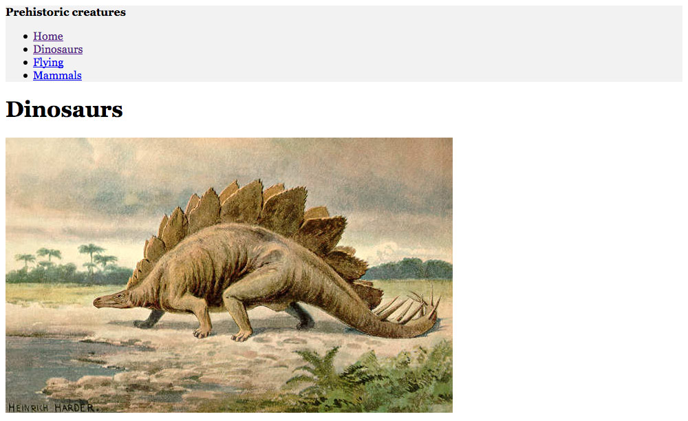
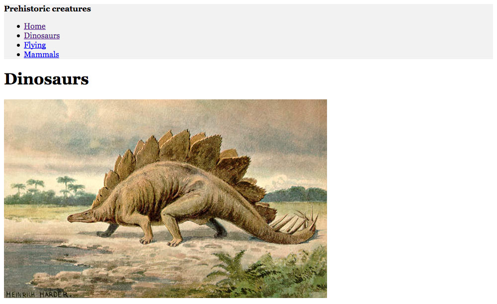
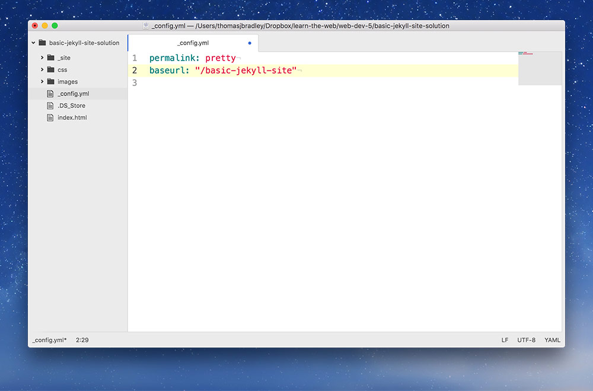
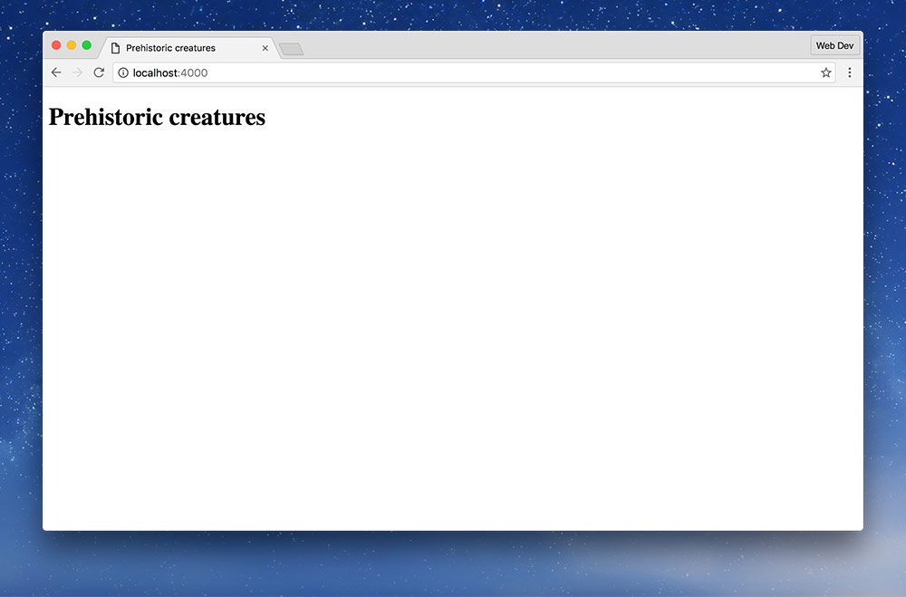
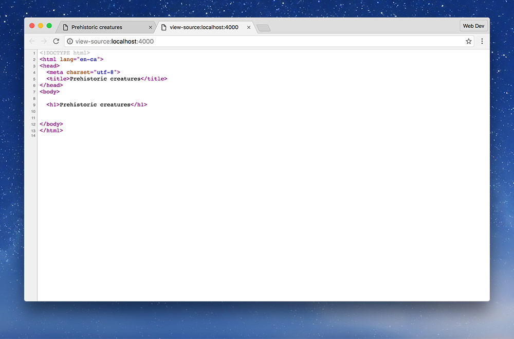
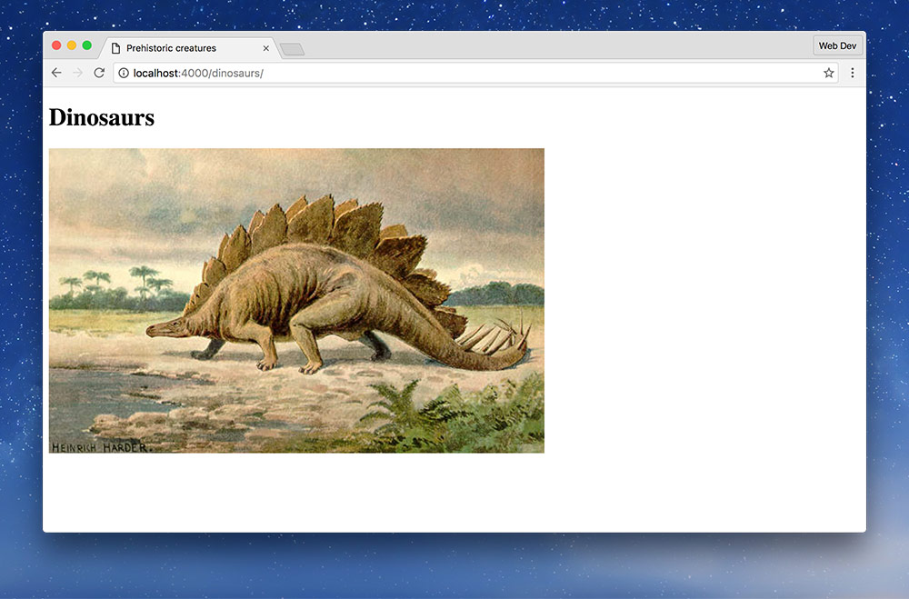
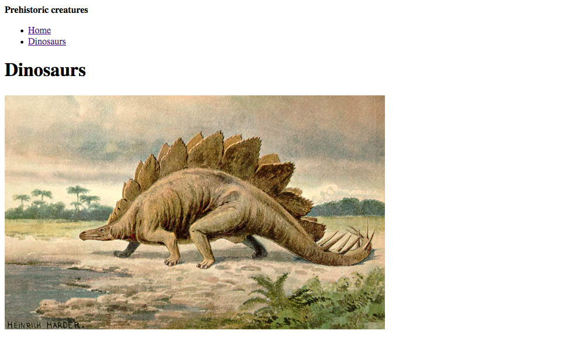
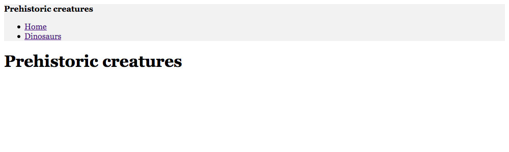
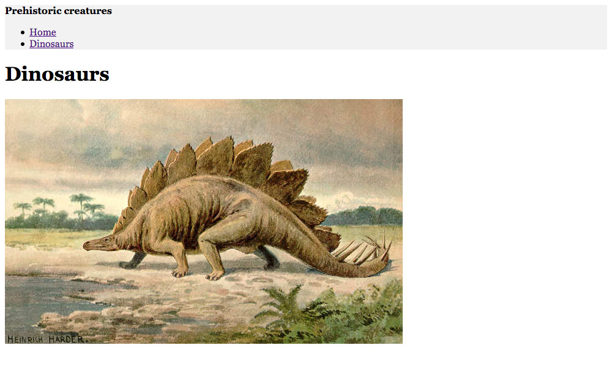

We’re going to look at setting up a small, multi-page website that uses Jekyll layouts to reduce code duplication.
This is what it should look like when it’s done:
Write the code necessary to make a very basic Jekyll powered website with shared header & navigation.
We’re going to look at setting up a small, multi-page website that uses Jekyll layouts to reduce code duplication.
This is what it should look like when it’s done:
Remember the purpose of this lesson is to type the code out yourself—build up that muscle memory in your fingers!
There’s a basic starter repo that has the images you need inside it—we’re going to work from that.
Then clone it to your computer.
You should now have the basic-jekyll-site folder and the images folder but we still need to make a few blank files.
basic-jekyll-site folder into your code editorindex.html filemain.css in your css folderAll of these files can remain empty for now.
Don’t forget to follow the naming conventions.
Before we start the Jekyll server system we’ll need to write some configuration.
First, create a file named _config.yml.
Type the following code in your _config.yml to set some defaults for Jekyll.
permalink: pretty
baseurl: "/basic-jekyll-site"
Your _config.yml should look like this:

And now we’re ready to start Jekyll!
The permalink: pretty setting is going to help make the URLs better looking—and more search engine friendly.
The baseurl matches the name of our GitHub repo.
When Jekyll is running it generates a few files that we never want in our Git repo—they should never be visible on GitHub.
_site is important because it’s the final output of your website—but it’s temporary and should never be committed..jekyll-metadata file while it’s running—this should also never appear on GitHub.We want Git to ignore these files and we can define what files to ignore using the .gitignore file. Let’s create that. Create new file in your code editor and name it exactly .gitignore—yes that’s a dot at the start.
If the OS gives you a warning about “dot” files being reserved, press: “Use ‘.’”.
Type the following code in your .gitignore to hide the Jekyll files.
_site
.jekyll-metadata
Make sure to save.
Hide the _site folder from Git & GitHub.
Hide Jekyll’s temporary .jekyll-metadata file from Git & GitHub.
Jekyll is a developer tool—and developers love the command line (me included). So, that means the interface to start and stop Jekyll is through Terminal.
We can get to the right place in Terminal using the GitHub Desktop application.
Leave this window running in the background as long as you’re working on your Jekyll website.
If you ever want to stop Jekyll, press Control-C or just quit Terminal.
Press ⌘T to open the repo in Terminal.
Now that Jekyll is running we’re ready to start making our website.
Let’s open our index.html and add a little bit of code.
---
layout: default
---
<h1>Prehistoric creatures</h1>
We intentionally didn’t add all the HTML boilerplate to index.html because I want to reduce code duplication—it’s not helpful to repeat code on every page.
If you have to copy-and-paste code you’re doing something wrong.
We won’t yet be able to see anything in our browser because we haven’t created the layout yet.
These are dashes—not underscores—and they must be the very first line in your HTML.
This is telling Jekyll which layout (aka master page) to use for this HTML file. Jekyll will automatically merge this HTML file and the master page together into one file.
Now we’re going to make our new layout, named default.html. This is exactly like an InDesign master page, it contains everything that is common to the whole website.
Layouts are always saved into the _layouts folder.
Next up we’ll add our HTML boilerplate and one other really critical line of code.
<!DOCTYPE html>
<html lang="en-ca">
<head>
<meta charset="utf-8">
<title>Prehistoric creatures</title>
<meta name="viewport" content="width=device-width,initial-scale=1">
<link href="css/main.css" rel="stylesheet">
</head>
<body>
{{content}}
</body>
</html>
Create the boilerplate with html5, viewport & css
Don’t forget to attached the CSS file.
The {{content}} is a placeholder. It’s marking where all the code we write inside index.html will be inserted into this layout.
To see our Jekyll website in the browser we must go to a very specific URL:
Double-clicking index.html or right-clicking and pressing Open in Browser will not work!
What we should see is a pretty generic website:

You’ll know it’s working properly if you open up View Page Source and see that all the code from index.html and all the code from default.html is combined together.

Next up we’ll look at how simple it is to make a new page to our website.
Make a brand new HTML file named dinosaurs.html
Add the following few lines of code into the file.
---
layout: default
---
<h1>Dinosaurs</h1>
<img src="{{site.baseurl}}/images/dinosaur.jpg" alt="">
We can view this page in the browser only by going directly to its URL, by typing it into the URL bar:

We’re linking up an image to this page. Notice the {{site.baseurl}} part, that’s there to help the website work on our local computer and on GitHub.
The reason we need it is because on our local computer the URL to our site is just localhost:4000 but on GitHub there is a folder at the end, like this: thomasjbradley.github.io/basic-jekyll-site
Notice that {{site.baseurl}} always has a / immediately after it.
Let’s add some navigation to our website so we can click around. Nothing too fancy, but it’s a better user experience than having to type the URL directly.
⋮
<body>
<header>
<strong>Prehistoric creatures</strong>
<nav>
<ul>
<li><a href="{{site.baseurl}}/">Home</a></li>
<li><a href="{{site.baseurl}}/dinosaurs/">Dinosaurs</a></li>
</ul>
</nav>
</header>
<main>
{{content}}
</main>
</body>
</html>
Since we added this code—only once—to our default.html it’ll now show up on all the pages of our website. Thank you, Jekyll.
Click around to make sure it works.

We’re using the {{site.baseurl}} again here to make the links work on our computer and GitHub.
Notice that {{site.baseurl}} always has a / immediately after it.
We don’t have to write the .html part for dinosaurs.html because of the permalink: pretty config setting—it automatically strips the .html off of files to make the URLs easier to navigate and make them nicer to look at.
It’s probably a good idea to wrap the page’s content in a <main> tag.
Finally we’re going to add some super basic CSS. Just enough to see how the CSS works.
html {
font-family: Georgia, serif;
}
header {
background-color: #f2f2f2;
}
If you refresh in the browser you may or may not see the CSS work.
It works great on the homepage.

But if you look at the /dinosaurs/ page you’ll notice the CSS doesn’t work.
The CSS error we’re seeing is a combination of a few things:
permalink: pretty, Jekyll is actually turning every HTML file into a folder. (You can see this inside the _site folder if you have a look.)css folder”—but inside the dinosaurs folder (created by Jekyll) there is no css folder.So, {{site.baseurl}} will fix the problem. We would have run into exactly the same problem with the image if we didn’t add the {{site.baseurl}}
<!DOCTYPE html>
<html lang="en-ca">
<head>
<meta charset="utf-8">
<title>Prehistoric creatures</title>
<meta name="viewport" content="width=device-width,initial-scale=1">
<link href="{{site.baseurl}}/css/main.css" rel="stylesheet">
</head>
<body>
⋮
Now all is good on the “Dinosaurs” page:

Add {{site.baseurl}} right before the CSS path.
Notice that {{site.baseurl}} always has a / immediately after it.
This is up to you. Create two more pages:
mammals.htmlflying.htmlLink them into the navigation and link up their images.